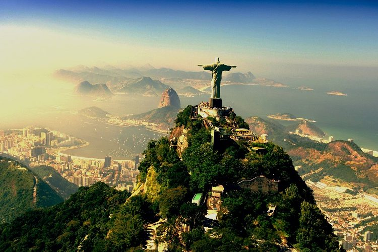
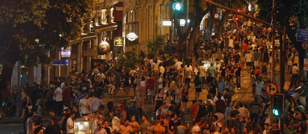

Informações
Rio de Janeiro (frequentemente referida simplesmente como Rio[7]) é um município brasileiro, capital do estado homônimo, situado no Sudeste do país. Maior destino turístico internacional no Brasil,[8] da América Latina e de todo o Hemisfério Sul,[9] a capital fluminense é a cidade brasileira mais conhecida no exterior,[10] funcionando como um "espelho", ou "retrato" nacional, seja positiva ou negativamente. É a segunda maior metrópole do Brasil (depois de São Paulo), a sexta maior da América e a trigésima quinta do mundo. Sua população estimada pelo IBGE para 1.º de julho de 2019 era de 6 718 903 habitantes.[3] Tem o epíteto de Cidade Maravilhosa e aquele que nela nasce é chamado de carioca.

Cristo Redentor.

Noite no Bairro da Lapa.
| Onde Ir | Localidade | Atração | Qtd. Pessoas | Custo Médio | ||||||||||
|---|---|---|---|---|---|---|---|---|---|---|---|---|---|---|
| Rio de Janeiro | Cosme Velho | Cristo Redentor | 2 | R$ 250,00 | ||||||||||
| Rio de Janeiro | Lapa | Atrações Noturnas | 2 | R$ 100,00 | ||||||||||